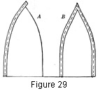
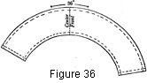

1930—Millinery Processes
by Carlotta M. Brown
CROWN COVERINGS
Sometimes too little attention is given to the crown of a hat, for in the crown lies the power to increase or decrease the height of the individual and the apparent width of the head and face. Therefore the fitting of the crown is a most important factor in making the hat more becoming (see Selection of Hats).
Patterns. Directions for the making of the paper patterns for the different types of crowns described below may be found under Patterns.
Tailored, or Fitted, Crowns
Tailored, or fitted, crowns are used when a very smooth, or tailored, effect is wanted, as in the hat with a wide thin brim or in a sailor shape to be worn with a tailored suit or coat. They are always made over a fabric foundation.
Construction. Place the pattern of the crown top on the fabric so that the straight thread of the material runs from the center front to the center back, and cut the exact size of the paper pattern. Pin the material to the fabric crown at the front, back, and sides; distribute the fullness evenly at the four bias corners, and pin securely all around. Catch down with the long-and-short stitch, the long stitch over the fabric. Establish a definite line for this stitching, so that the finish at the top of the side crown is at an even distance, at all points, from the curve where the top of the crown slopes downward into the side crown (Fig. 22). After the fabric has been sewed in place, trim as close to the stitching line as possible to give a smooth finish.
Figure 22. Tailored top, sewn in place, showing trimmed and untrimmed edges.
Figure 23. Tailored, or fitted, side crown. Showing the wrong side of the fabric, with the back seam adjusted for stitching, and with the depth of the upper and lower side-crown seam turnings indicated.
Place the pattern of the side crown on the material, allowing for seams at the top, the bottom, and the back. Fit the fabric snugly around the crown, placing the seam directly in the back. Trim to the required seam width of ¼ of an inch. Remove the fabric from the crown, turn the seam to the wrong side, and stitch on the machine. Press the seam open, slip the crown into place, right side out, and pin. If a cord-edge finish at the top is desired, follow the directions, for cord-edge finish (see Edge Finishes). If the slip stitch is to be used, see the directions given on page 51, also page 163. In case the material used for the crown has a heavy nap, as in velvet, and cannot be pressed flat with the iron, follow the directions given under Pressing.
Bottom finish of crown. The bottom of the crown is finished by turning the seam allowance over the edge of the crown and catching into place with the catch stitch, or by fastening the foundation crown to the brim before the bottom finish is made and then turning a seam allowance and slip-stitching to the brim.
 Soft Crown with Oval or Round Top
Soft Crown with Oval or Round Top

Figure 24. Oval crown top with quarters marked.
This crown may or may not be made over a fabric foundation. Keep in mind, when planning for a crown of this kind, that upon this oval or round top (called usually the tip) depends the type of the finished product, for there are a number of variations of this crown with the construction exactly similar but with the measurements of the crown tip differing. The depth of the ordinary crown is 9 inches from the top to the base, and it is easy to adjust the depth of the side crown to the size of the oval; in other words, when a small oval is used as the top, the side crown is necessarily deeper than when a large oval is used. The side crown may be made on the bias or on the straight of the material.
Crown tip. Place the pattern on the material, with the straight thread of the material running from front to back, and cut. The side crown is usually made of bias material. Find the exact head size (see Measurements). Determine the depth of the side crown and cut the bias from the material. The bias must fit snugly round the bottom of the crown, for extra fullness at this point is difficult to dispose of neatly. Fit and establish the back seam. Sew by machine and press the seam open. As the seam in the bias strip runs diagonally, the placing of this seam in adjusting the crown is important. The center of the seam must come directly at the back of the crown, one half of the seam on each side of the center (Fig. 25). Mark the center front, the center back, and each side of the bias side crown. Run a shirr thread around the top of the crown. Place the right sides of the crown and the oval together, with the markings joining. Draw the shirr thread into place so that the fullness may be distributed evenly. Baste, and sew by machine, removing the basting and turning to the right side in completing. If a narrow top to the crown is desired, the oval must be small, making the bias side deep enough to bring up over the curve of the crown to meet the oval. If the crown is to have soft folds, extra depth must be allowed for the folds, according to the amount of softness wanted. The crown oval may be increased or decreased to suit the type of individual.
Figure 25. Bias side crown marked at quarters with center of bias seam at center back of crown.
Although it does not give the same degree of softness, a straight side crown may be made when small straight pieces are to be utilized. If a straight side crown is desired, measure for the depth and head size of the crown plus a seam allowance at both sides and at each end of the strip. This crown will have an upright seam which comes directly at the back of the crown. Mark, baste, and sew the side crown to the crown oval in the same manner as in the bias side crown. Turn the seam allowance at the bottom of the crown and attach to the brim with the slip stitch.
If this crown is to be made over a fabric foundation, attach the crown to the brim, slip the soft crown over the fabric crown, turn the seam allowance into place at the bottom of the crown, and slip-stitch to the brim (Fig. 50); if the crown is to have a very soft effect, it is attached to the brim by the same method, letting the soft hat lining serve as the only foundation.
 Shirred Crowns
Shirred Crowns

Shirred crowns are made either from a bias or a straight strip of material. They are especially attractive for children's hats, although they may be used on hats for adults also.
Construction. The shirred crowns always are made over a foundation crown. Measure the depth of the crown from the top to the base, allowing ½ of an inch at each side of the strip for the finish at both the top and the base of the crown. The strips are the length of the circumference of the base of the crown plus from ¼ to ½ of the length for the shirring. The distance between the shirr threads is usually from ½ of an inch to ¾ of an inch. On the wrong side of the material indicate with tailor's chalk where the lines of shirring are to go. Join the strips in a circle before running the shirr shreads. The shirring may be done either by hand or by machine. Starting at the center back of the strip, secure the thread with a firm knot but do not back-stitch, for the thread is to be pulled up. Follow each line of marking until all the shirrings are completed. For the top joining turn the crown to the wrong side and pull the top shirr thread to a measurement of 5 inches in length. Divide this opening in half and sew in a seam the length of which runs from the front to the back of the top of the crown (Fig. 26). This type of joining avoids an appearance of bulk; and, by giving the length to the top joining, the shirrings have a perfect line as they follow down the side crown. Pull up the threads, slip the crown over the foundation, and distribute the gathers evenly. The thread ends should be pulled through the foundation crown and fastened. Turn the seam allowance at the base of the crown for the finish. Cut a slash at the top of the fabric crown and slip the top seam into the opening.
Bias-strip Crown
Bias-strip crowns are usually made over a foundation crown, although they may be fashioned without the foundation.
If a foundation crown is used, the folds are prepared as for the bias-fold brim. Start the folds 2 inches to the right of the center back of the base of the crown, with ¼ of an inch extending beyond the base of the crown for final finish when attaching to the brim. Lap, and start spiral at back, winding the fold around the crown, lapping and sewing as for the brim folds (Fig. 17). As the curve of the top of the crown is reached, a slight fullness will be found at the raw edge of the fold. Distribute this fullness evenly and hold in place under the long stitch. When the top of the crown is reached, cut a lengthwise slash in the foundation crown and run the end of the fold through this slash; this makes a neat finish. If a tailored effect is desired, the outer edge of the fold may be sewed to the crown with long and short stitches, the short stitch showing on the right side. The same color of thread or a contrasting thread may be used for this stitching.
If bias folds are to be used for a soft crown, it is best to pin the folds into place over a crown block or a stiff fabric crown. Remove, and sew as in the process preceding.
Sectional Crowns. (See Patterns)
Sectional crowns have many interesting variations, and often are spoken of as jockey, or melon, crowns. They may be put together with a plain or a corded seam. The number of sections used depends upon the preference of the individual, although the popular choice ranges from four to six. These sections may be so joined that they come to a point at the top of the crown; or they may be cut to carry the sections over the head, with seams running from side to side. The former gives the effect of increased height; and the latter, of increased width.
Construction of an Upright Sectional Crown
Unfold the pattern, place on the fabric, with the straight thread of the material running lengthwise through the sections from the tip to the base of the crown, and cut. If four sections are used, baste the sections together to form two halves (Fig. 27). Next baste the two halves together, with the continuous seam running from the front to the back and with points meeting accurately at the top. Fit on the head and adjust if necessary at this point of construction. Sew by machine and do not iron the seams. If five sections are used, the sections should be basted together, one after the other, and fitted for seam adjustment (Fig. 28). If six sections are used, baste together in groups of three; the two groups of three sections are then joined as in the four-section crown. Fit to the head and adjust seams.
Figure 27. Four sectional-crown sections in position for joining.
Figure 28. Five sectional-crown sections in position for seaming.
Sectional Crowns with Corded Seams
If four sections are used, proceed with the basting and fitting as for the four-section plain-seam crown (Fig. 27). The fitting must be done carefully; for after the cords are placed, it is a difficult task to make changes. When the crown has been fitted accurately, run a basting thread along the fitted seam line before taking it apart. This line is then followed in the placing of the cord. Rip the crown and insert the cording between the seams (Fig. 20). In placing the cord between the seams either of two arrangements may be followed:
1. Start cording at the base of one of the sections, with the raw edge of the bias corded strip to the raw edge of the section and the right sides placed together. Baste section and cord together, following the basting line, and cut the cord at the top, or point, of the section (Fig. 29, A). Baste a second section to the one already corded to complete one half of the crown. Repeat the process when cording and joining the remaining two sections. Place a final cord, running from the base of the crown at the center front to the base of the crown at the center back; baste the cord to half of the crown; and join the second half to the corded half. This will give an unbroken cord line running directly over the top of the crown from front to back. Sew by hand with small running stitches.
2. Cord  entirely around two sections (Fig. 29, B; also Fig. 30), join
the remaining two sections to the two corded sections, and sew with the
small
running stitch.
If five sections are used, place the cord on one side of every section, the
cord being cut at the point of the crown. The sections are then joined together,
one after the other, until the crown is completed. Sew by hand with the small
running stitch.
entirely around two sections (Fig. 29, B; also Fig. 30), join
the remaining two sections to the two corded sections, and sew with the
small
running stitch.
If five sections are used, place the cord on one side of every section, the
cord being cut at the point of the crown. The sections are then joined together,
one after the other, until the crown is completed. Sew by hand with the small
running stitch.
Figure 29. Corded upright sectional-crown sections. A, cording joined to one side of section and cut at top; B, cording carried from base of crown on right side to base of crown on left side.
Figure 30. Four-sectional crown with cording running entirely around two sections.
Figure 31. One section of sectional crown, showing separate pieces used to make definite design.
A six-section crown may be corded by either of the processes used for the four-section crown, the only difference being that the half crown will consist of three sections instead of two.
These sections may be cut and joined in many ways, using the same or contrasting material. This must be done, however, as the sections are being planned, each section being completed before joining it to the others. It is necessary that the points at the top of the crown join accurately, as the lines of the crown radiate from this point, and it is the most conspicuous part of the crown. A seam placed at the front of the crown gives the most becoming line; if a section is placed at the front of the crown a flattened effect is given to the face of the wearer.
Where cords have been cut and collected at the top of the crown, and the finished sectional crown is to be placed over a fabric foundation, a slash may be made at the top of the foundation crown and the cords pulled through.
Sectional Crowns with Sections running from Side to Side
This type of sectional crown suggests weight or width much more than does the upright sectional crown, and must be planned with this fact definitely in mind.
Construction. After the material has been cut exactly by the pattern, the two crescent-shaped pieces are joined at the greater curve to the long center strip, one on each side, and the two half circles forming the front and the back of the crown are joined to the smaller curve of the crescent.
Before joining, find the center of each piece and mark it. Place the pieces so that the markings stand opposite each other, basting each way from the center point rather than from end to end. This is done so that any fullness along the curved edges may be distributed evenly and so that the base of the crown strips may meet accurately. This crown may be finished with cording as in the other sectional corded crowns.
Side Crown with Scalloped Edge and Oval Top
Construction. Place the pattern on the fabric and cut. If felt is used for the side crown, the edges are left raw; if velvet or silk, the edges must be turned as for a casing. Stitch around the scallops two or three times, not only for decoration but so that the stitching will draw in the edges slightly, causing the scallops to conform to the curve of the top of the head (Fig. 96). Finish the back seam of the crown and mark the quarters. Place the crown over the oval to the depths of the slashes and pin the scallops in place, the fullness being taken out under the scallops and not at the slash point. A hat block is a great convenience in adjusting a crown of this type, for the crown may be slipped over the block and the scallops pinned. Baste and sew by hand, following one of the lines of machine-stitching.
Part-sectional crowns are very effective. They may be made with the sectional top entirely separate from the plain side crown or with the sectional top and the side crown in one piece.
Side Crown and Sectional Top in One Piece
Construction. Place the pattern on the fabric with the front on the straight thread of the material, and cut. Join the sectional top with or without cords. Follow the processes given for the varying number of sections, the only difference in point of construction being that the combination crown is joined with an upright seam directly at the back (Fig. 33).
Figure 33. Wrong side of side crown and six-sectional top in one piece, showing continuous seam line from front to back of crown top.
Side Crown and Sectional Top Separate
Construction. For the top use the separate sectional-top pattern. Baste the pieces for the top of the crown together and sew as in the making of the sectional crown of the same number of pieces. The average crown is 9 inches in depth from top to base. Measure one half of the crown top and subtract this number of inches from 9. This will give the depth of the side crown minus the two seam allowances for finishing. Cut a bias strip for the side crown and fit, join, and seam at the back as for a plain bias crown (Fig. 25). Measure the halves and quarters of the crown top and side crown; place the right sides together, baste, and sew.
Tams. (See Patterns)
The tam is much in favor with the younger girl, being soft and comfortable and usually made of material that will stand rough treatment and will not soil. The tam may match a coat or scarf, completing a costume, or be worn for sport wear. It may be made in one piece or cut in sections.
One-piece Tam
Construction. Place the pattern on the fabric and cut, marking the halves and quarters of the circle. Run two shirr threads ¼ of an inch apart around the outside of the circle and draw up the threads (Fig. 34). Measure for the exact head size (see Measurements); cut a strip of the same material 3 or 4 inches wide and of the head-size length plus a half-inch seam allowance at each end. Seam at the back and open the seam, folding the strip in the center lengthwise. Baste along the lengthwise fold to insure even division of the band. Fold the band in quarters and mark (Fig. 35, A). The band and the circle may be joined in two ways:
1. Turn the seam allowance at the edge of the headband and baste. Place the markings together, letting the outside half of the headband extend up over the fullness. Baste into place and stitch by machine. The under half of the head-size band is then brought up into place over the raw edge and slip-stitched. This gives an upright appearance to the fullness.
 2. Place the markings of headband and circle together, with the right
side of the circle to the right side of the headband. Distribute the gathers
evenly
and sew the
two pieces together with a plain seam. Turn the facing of the headband into
place, extending it over the seam, then turn the seam allowance on the headband,
and slip-stitch. This method gives the crown a more pronounced droop. If
very soft material is used, a light-weight stiffening may be placed under
the fabric. If the material is not wide enough to complete the circle, the
piecings should come on each side.
2. Place the markings of headband and circle together, with the right
side of the circle to the right side of the headband. Distribute the gathers
evenly
and sew the
two pieces together with a plain seam. Turn the facing of the headband into
place, extending it over the seam, then turn the seam allowance on the headband,
and slip-stitch. This method gives the crown a more pronounced droop. If
very soft material is used, a light-weight stiffening may be placed under
the fabric. If the material is not wide enough to complete the circle, the
piecings should come on each side.
Figure 35. Two-piece circular tam. A, headband; B, facing, showing the shifting of the head-size oval to the left to give more droop to the right side of the tam.
Two-piece Circular Tam
Construction. Place paper circles on the fabric and cut. Measure for head size (see Measurements) and cut the head-size oval from the center of one of the circles (Fig. 35, B). If a cording is to be used at the edge of the circle to add a decorative note, cover the cord with a bias strip of the material and, starting at the center back, sew to the top circle first, using the method for attaching the cord to the sectional-crown strips (Fig. 29). Join the two circles together, with the cord showing at the edge.
For a headband cut a strip 3 inches wide plus half an inch at each end for a seam (Fig. 35, A). Sew by machine and open the seam. Fold the headband in halves along the lengthwise fold and run a basting along this fold. Mark the halves and quarters of the head-size oval and head-size band and place the markings opposite each other. Attach by either of the processes described for the one-piece tam.
The headbands may be made of ribbon or of contrasting material; stiffening may be used if desired. If the tam circle is brought down to the base of the headband, a narrow band of crinoline or flexible net may be placed on the inside of the band to hold the head size in place. If no head-size band is used, the head size of the tam may be bound with a bias or a straight binding of the same material. This gives a neat, tailored finish.
The placing of the head-size oval may be shifted to the left or the right side of the under circle to give the tam a decided droop on either side without pulling it out of place.
Beret Tam
Beret tams are made of two flat circles like those used for circular tams, but smaller and close-fitting. Usually they are made of heavy material, and are not sewed to a head-size band but are bound with narrow straight binding.
Construction. Place the pattern on the fabric and cut. Next cut the head size from the center of one circle. Sew the two circles together at the outside edge, the right sides together. Bind the head size.
Tam with Circular Top and Fitted Under Crown
Construction. Place the pattern on the fabric and cut. Join the fitted side-crown strip by machine and open the seam. Join the side crown to the circular top with a plain seam or with cording. Follow the same process for the headband as for two-piece circular tams.
Tam with Fitted Under Crown in Two Parts
Construction. The pattern is placed on the fabric, and the material cut accordingly, for allowance has already been made for the seams (Fig. 37). The under-crown seams are placed on each side of the crown. Sew by machine, press, and attach to the top circle and the head-size band as for the two-piece circular tam.
Six-section Flared Tam
Construction. This attractive tam may be made in six sections, which flare to give the customary wide flat line to the crown. Place the pattern for the sections on the fabric, as for the plain sectional crown, and cut; use a plain or corded seam finish (Fig. 20). Bind the head size with a straight or bias strip of the same material. Care should be taken not to stretch the head size when attaching the binding.
These sections may be enlarged or decreased; but if the head size is enlarged or decreased, then the proportion of the sections must be increased or decreased accordingly. The sections may also be placed on the bias of the material and cut. This gives added softness to the tam. They may be made with or without a lining, depending entirely upon the fabric used.